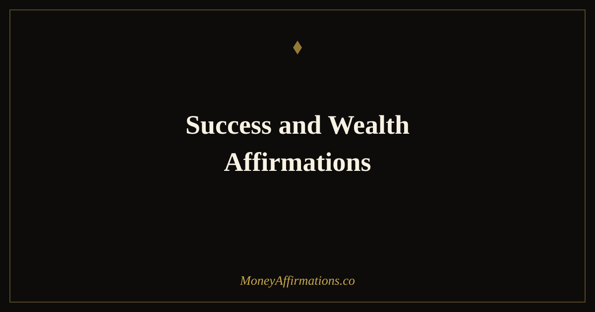

Success and Wealth Affirmations: 30 Statements to Have Both

One of the quietest and most persistent money beliefs is the idea that success and wealth cannot coexist with a meaningful, ethical, or generous life — that achieving both requires compromise. This belief is rarely stated openly. It lives in the discomfort of charging your actual worth, the guilt around a profitable month, the hesitation before claiming an achievement, and the sense that wanting a wealthy life makes you somehow less admirable. It is one of the most limiting stories a person can carry, and it is almost always invisible to the person carrying it.
Success and wealth affirmations work directly on that false binary. These 30 statements are designed for people who want achievement and financial abundance to reinforce each other rather than compete. They address the specific belief layer — the one that says success is fine but wealth is greedy, or wealth is fine but real success is only about impact — and replace it with a more integrated, more truthful story.
What are success and wealth affirmations?
Success and wealth affirmations are present-tense statements that affirm your right to both meaningful achievement and genuine financial prosperity — simultaneously, without apology or internal contradiction. They are useful for anyone who finds they can pursue one or the other comfortably, but hits resistance when trying to claim both: the entrepreneur who works meaningfully but chronically undercharges, the professional who earns well but feels secretly undeserving of it, or the person whose financial goals feel somehow embarrassing to admit.
The core work these affirmations do is dissolving the false choice. Success and wealth are not competing values — they are mutually reinforcing realities when approached with integrity. A person who earns well has more capacity to be generous, to take risks that create impact, and to sustain the work that matters to them. These affirmations plant that understanding at the belief level, where behaviour change actually begins.
30 success and wealth affirmations
- I am building a life that is both deeply meaningful and genuinely wealthy.
- Success and abundance are not in conflict — they are my natural state together.
- I deserve financial wealth as much as I deserve any other form of success.
- My work creates real value in the world and I am paid well for it without guilt.
- I release the belief that wanting wealth makes me any less good, kind, or worthy.
- I am successful because of my integrity, my effort, and my willingness to grow.
- The more I prosper financially, the more good I can do in every other area of my life.
- I am a person who achieves meaningful goals and builds real, lasting wealth.
- My ambition and my values align — I create success without compromising either.
- Wealth amplifies who I already am — and I am someone who uses it well.
- I am proud of my success and I allow myself to enjoy the financial rewards it brings.
- My financial life reflects the quality of my thinking, my effort, and my character.
- I set high standards for my work and for my income and I meet both consistently.
- Success in every dimension of my life — professional, personal, financial — is my right.
- I attract wealth because I create value, act with integrity, and show up fully.
- I give generously because I have built generously — success and abundance together make that possible.
- My wealth supports the life I want to live and the person I want to be.
- I release comparison and focus on building the version of success that is specifically mine.
- I am clear about what success means to me and I pursue it with full financial intention.
- The world needs people who are both purposeful and prosperous — I am one of them.
- My achievements grow stronger the more confidently I also claim my financial worth.
- I do not choose between impact and income — I build both, deliberately, every day.
- My success story is still being written and it includes a chapter of significant wealth.
- I have worked hard for my success and I claim its financial rewards without apology.
- Wealth built on genuine value and honest effort is something I am proud to create.
- I am capable of extraordinary success and I support it with a wealthy, secure financial life.
- Every success I achieve opens a new financial door — and I walk through every one.
- I live and work as someone who expects success and welcomes the wealth it creates.
- My definition of success is expansive enough to include financial freedom and fulfilment.
- I am already successful in meaningful ways and I continue to grow wealthier every day.
How to use these affirmations
Success and wealth affirmations are particularly effective when used during moments of internal conflict — when you feel the pull between wanting more financially and a quiet voice saying that wanting more is somehow wrong. Rather than suppressing that discomfort, name it, then respond with a specific affirmation. "I release the belief that wanting wealth makes me any less good, kind, or worthy" spoken directly into the moment of doubt is more powerful than the same statement repeated mechanically during a neutral morning.
For a regular practice, choose five affirmations each morning and pair them with a written statement of your current most important success goal and your current most important financial goal. Hold both simultaneously. The exercise of writing both — without prioritising one or apologising for the other — is itself a form of belief work. Over time, the resistance to claiming both decreases and the two goals begin to feel not like a compromise but like a natural unity. Pair this practice with the financial freedom affirmations for an additional layer of wealth-building belief.
Why success and wealth beliefs become tangled — and how to separate them
Psychologists have identified a pattern called the "money is the root of all evil" belief cluster — a set of deeply held, often culturally reinforced associations between wealth and negative character traits: greediness, selfishness, exploitation, superficiality. Research by Brad Klontz and colleagues in the field of financial psychology found that these money scripts — automatic, unconscious beliefs about money formed in childhood — predict financial behaviour more reliably than financial knowledge or income level. People who hold negative associations between wealth and character will unconsciously undermine their own financial success to maintain consistency with their identity as a "good person."
The insight that matters most here is that the belief is not logical — it is associative. Unpairing "success and wealth" from "bad character" requires introducing new associations at the same emotional level at which the original ones were formed. This is exactly what affirmations do: they do not argue with the old belief, they create a competing one. "Wealth amplifies who I already am — and I am someone who uses it well" is not a counter-argument. It is a new identity statement that, repeated until it becomes automatic, changes the emotional response to financial growth from guilt to congruence.
Tips to make them work faster
- Notice the guilt signal and name it. When financial success or ambition creates guilt, that is the exact affirmation moment. The discomfort tells you which statement to say.
- Write both goals together every morning. Your most important success goal and your most important financial goal, on the same line, without editing either. The practice of holding both is itself the work.
- Surround yourself with people who have both. Belief is social as well as internal. Exposure to people who are both purposeful and prosperous makes the combination feel normal rather than exceptional.
- Celebrate financial wins as loudly as other achievements. If you would post about a professional milestone, also acknowledge a financial one. Consistent treating of money as a legitimate part of success reshapes the association.
- Revisit your definition of success annually. Success and wealth beliefs evolve. What felt greedy at twenty may feel appropriate and earned at thirty-five. Keep your affirmations current with who you are now.
Frequently Asked Questions
Why do some people feel they have to choose between success and being a good person?
This is one of the most common and costly money beliefs — the idea that success and wealth come at an ethical or relational cost. It often originates in cultural messaging, family stories about wealthy people, or observed examples of success achieved through compromise. Affirmations that combine success with integrity, generosity, and purpose directly address this false binary and create permission to pursue wealth without guilt.
Can I be successful without being wealthy?
Absolutely — and for many people, success is primarily about impact, relationships, and purpose rather than financial accumulation. These affirmations are for people who want both: the meaningful, purposeful life and the financial stability that makes that life more sustainable. They are not about equating net worth with human worth — they are about removing the self-imposed barriers to having both simultaneously.
How do success affirmations differ from wealth affirmations?
Wealth affirmations focus primarily on financial identity and financial outcomes. Success affirmations address the broader sense of achievement, contribution, and efficacy. The combination in this post targets both simultaneously because for many people the limiting beliefs around money and around success are deeply intertwined: unblocking one without the other often leads to a ceiling that holds the other back.
For a broader collection of statements aligned with building lasting financial wealth, explore the full wealth affirmations collection and build a practice that supports both the success you are creating and the financial life it deserves to fund.